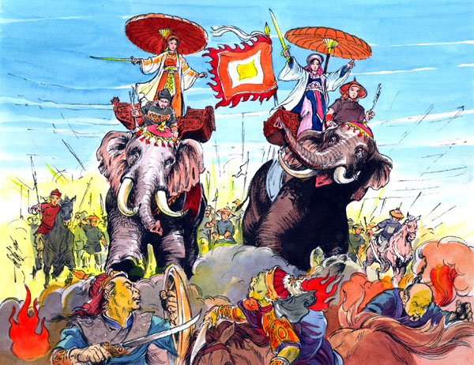
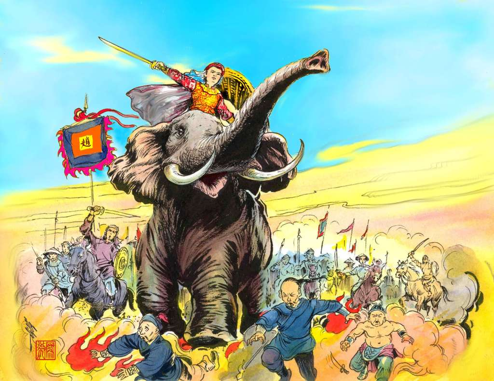

NGÀY 1 tháng 8, năm Việt lịch 2893, kỳ nguyên Lạc Long (tức là năm 14 sau J.C., thế kỷ 1 Tây lịch) tại đất Mê Linh, tỉnh Sơn Tây, có hai chị em sinh đôi.
Người ra chào đời trước được đặt tên là Trưng Trắc người kế tiếp ra sau, nhỏ hơn, tên là Trưng Nhị.
Thân phụ là cựu Lạc-tướng họ Trưng, có làm quan dưới thời Triệu Đà. Thân mẫu là bà Man Tniện, nhũ danh Trần thị Đoan, là một cháu ngoại của giòng giõi Hùng Vương XVIII.
Bá goá chồng sớm, nhưng ở vậy nuôi con gái, giáo dục hai con trong tinh thần yêu nước, yêu nhà.
Năm Việt lịch 2913, kỷ nguyên Lạc Long. Trưng Trác 20 tuổi, được mẹ gả cho Đặng thi Sách, một thanh niên thế phiệt, cũng là gióng giõi Lạc-tướng, và đang làm Lệnh doãn huyện Chu Diên. Chức Lệnh doãn lúc bấy giờ tức là Quận trưởng ngày nay.
Chu Diên là một trong 10 huyện rộng lớn của xứ Giao Chỉ, mà người Tàu đô hộ đặt tên là Giao Chỉ quận. Đầu thế kỷ thứ 1, Tây lịch, từ năm 111 trước J.C, đến năm 39 sau J.C, tức là suốt thời kỳ 150 năm, từ năm Việt lịch 2768 đến 2918 kỷ nguyên Lạc Long, lãnh thổ Việt-Nam mới gồm có hai xứ: Giao Chỉ Quận và Cửu Chân quận (hiện nay là Bắc Việt và Bắc Trung Việt đến tỉnh Nghệ An) đã bị lệ thuộc nhà Hán. Đó là lần thứ nhất trong Lịch sử Dân tộc Việt-Nam, giòng giõi Long Nữ, Lạc Long, Hùng Vương, bị người Tàu đô hộ.
Cùng năm hôn nhân của Trưng Trắc và Đặng thi Sách (2913 Việt lịch, 34 Tây lịch), vua Hán Quang Vũ cử viên tân thái thú qua cai trị Giao Chỉ, tên là Tô Định.
Tô Định là một tham quan ô lại, bất cố liêm sỉ, lại chính sách vô cùng tàn ác, gây oán hận trong khắp nhân dân Giao Chỉ. Bấy giờ lại có nạn lụt lớn, khiến dân chúng đã thốt ra câu ca dao than thở:
Trời mưa nước ngập sông Đoài
Cỏ lên đè lúa, cá trôi lềnh bềnh.
Nhân dân đã bị đói rét vì nạn lụt lại còn bị Tô Định chuyên chế, bốc lột gắt gao, áp bức vô nhân đạo. Mùa màng mất hết, dân không đủ lúa ăn, mà thuế địa tô thì nặng, dân phải đi xâu lực dịch đêm ngày, bị đánh đập tàn nhẫn. Tiếng kêu rêu oán thán nổi dậy khắp nơi. Trước cảnh đau khổ quá bi đát của đồng bào, viên Lệnh Doãn Đặng thi Sách làm tờ khuyến cáo tâm huyết bằng chữ Hán, gởi lên Thái thú Tô Định, như sau:
‘‘...Loát nhĩ Nam phương, ức vạn sinh linh giai Triều đình xích tử. Thừa lưu, tuyên hóa, tất dĩ ái dân vi tiên. Tử kim vi chánh, trung ngôn gia mưu giã kiến tội, bôn tẩu thừa thuận giả kiến thưởng. Cơ thiếp đắc dĩ lộng chính, biền bế đắc dĩ thiện quyền
‘‘ Tuy ái dân chi thuyết vô thời vô chi, nhi tổn hạ chi tâm dũ nhật dũ liệt! Tuấn dân cao dĩ phong kỳ tài, kiệt dân lục dĩ cung kỳ dục! Tự thị phú cường, lẫm hữu thái-a chi thế, bất tri khuynh bại, thí như triêu lộ chi nguy.
‘‘Như bắt tế chi dĩ khoan, tắc nguy vong lập chí hỉ’’.
Dịch nghĩa:
(Phương Nam đành là nhỏ, nhưng ức vạn sinh linh đều là con đỏ của Triều đình. Kẻ được thừa mệnh Vua đi tuyên dương đức hóa, tất nhiên phải lấy việc yêu dân là trước cả.
Ngày nay, Ngài làm hành chánh, lại bắt tội người nói thẳng, kẻ mưu hay, cho bọn tỳ thiếp được lộng xen vào chính sự, bọn nịnh thần được chuyên giữ quyền hành.
Tuy ngoài miệng luôn bô bô thương dân, mà trong bụng thì chăm chăm bốc lột. Rán mỡ dân để thêm giàu có, rút sức dân để thỏa thích lòng tham. Cậy rằng giàu mạnh, tưởng như gươm Thái A sắc bén, sao chẳng biết rằng nguy biến có thể đến, như sương sớm rã tan. Nếu không gấp sửa đổi khoan hồng thì sẽ gặp ngay, bại diệt...).
Tô Định xem xong thư nổi giận đùng đùng, không những không biết bình tĩnh, sáng suốt, nghe lời trung chánh, thay đổi sách lược, lại còn quyết sát hại người chí khí can cường. Hắn kéo quân vào huyện Chu Diên, bắt Đặng thi Sách đem ra pháp trường xử tử. Bá Man Thiện, mẹ hai bà Trưng, cũng chết trong khi chống cự lại quân Tô Định.
2 - Diệt địch.

Trưng Trắc và Trưng Nhị cùng gia tướng Đô Dương chạy về Mê Linh, quyết trả nợ Nước, báo thù chồng, đền ơn Mẹ
Năm sau, Việt lịch 2919, kỳ nguyên Lạc Long ( Tây lịch 40), Trưng Trắc và em triệu tập được 80 000 quân, gầm cả quân nhân phụ nữ.
Ngày 6 tháng Giêng, bà vừa được 21 tuổi, cùng với các tướng sĩ Nam Nữ, làm lễ tế cờ thật là cảm động, và truyền lệnh khởi nghĩa, diệt địch Bắc xâm phục hồi xã tắc.
Ngày 7, Bà thao diễn binh sĩ trên bãi Trương Sa, bên sông Bạch Hạc, tỉnh Vĩnh Yên, rồi Bà đích thân chỉ huy tiến quân vào đánh Tô Định tại thành Liên Châu.
Trước làn sóng công hãm ào ạt bất ngờ của một vị Nữ tướng lẫm liệt oai phong, Tô Định tuy qnân số đông hơn, tàn bạo, nhưng không có tinh thần, kháng cự không nổi. Trưng Trắc đánh đuổi Tô Định quyết lấy đầu kẻ thù của Dân, của Nước, nhưng Tô Định trốn thoát về quận Nam Hải, tỉnh Quảng Đông. Thừa thế thắng lợi, Trưng Trắc kéo quân đánh khắp quận Giao chỉ, nơi nào có tàn quân Tàu chiếm đóng. Bá lấy được 56 thành trì, và hoàn toàn khôi phục lại độc lập và chủ quyền của Đất Nước, trong thời gian mấy tháng.
Bà lên ngôi trị nước, lấy niên hiệu Trưng Nữ Vương Nguyên - Niên đổi quốc hiệu là Triệu Quốc, lấy Mê Linh làm kinh đô.
Trong đám tướng sỉ của Bà, có hai vị Nữ tướng tài ba nhất: Đông Cung tướng quân và Thị Nội tướng quân Đông-Cung Tướng quân tên thật là Hoàng Thiếu Hoa, quê huyện Gia Hưng, tỉnh Thanh Hóa, quận Cửu Chân. Bà đi khắp nơi, tuyên truyền những hành vi tàn ác của quân Tàu, và chính nghĩa của Bà Trưng. Dân chúng, cả nam lẫn nữ, tình nguyện theo Bà rất đông, thành lập một đạo quân phục quốc, theo về phục vụ Bà Trưng, và thâu được nhiều chiến công.
Khi Bà Trưng lên ngôi, ban thưởng cho tất cà binh sĩ, thì bà được phong chức Đông Cung tướng quàn. Bà còn trẻ, và chưa có chồng.
Thị Nội Tướng Quân, tên thật là Phùng thị Chinh, vợ ông Đinh Lượng, người tỉnh Sơn Tây, lảng Trang Phú Nghĩa. Bà rất đa mưu, đa trí, được Bà Trưng rất tín dụng. Bà có thai nhưng cũng cương quyết xin ra chiến trận, mặc dầu Bà Trưng ngăn cản. Trong lúc hai Bà Trưng cỡi voi xung phong, bà Thị Nội tướng quân cũng cỡi ngựa theo sau, đốc thúc binh sĩ. Tại vậy mà giữa lúc lâm trậm, bà bị động thai, nhưng Bà còn múa gươm chém được vài tên tỳ tướng của Tô Định rồi bị sẩy thai. Bà vẫn cố phá được vòng vây của quân Tầu, và phi ngựa thoát ra được.
Sau này, được tin Trưng Nữ Vương tự trầm, Bà Thị Nội tướng quân cũng cầm gươm tự sát luôn.

Bà Triệu
3 - Triều đại Trưng Vương mở màn cho lịch sử Việt Nam độc lập.
Quyển ‘‘Hoàng Việt Giáp tí niên biểu; quyển thượng’’ viết bằng Hán tự của cụ Ngô Bá Trác, in tại Huế, năm Khải Định thứ 10, chép về Trưng kỷ như sau:
‘‘Canh Tý (40) Trưng nữ Vương nguyên niên
‘‘Tân Sửu (41) Trưng nữ Vương nhị niên
‘‘NhâmDần(42) Trưng nữ Vương tam niên
‘‘Quý Mão (43) Đệ tam thứ Nội thuộc.
Quyển ‘‘Synchronisme Chinois’’ của vị Linh mực Tàu Mathias Tchang S.J viết bằng Pháp văn, và in tại Thượng Hải năm 1905, chép về Trưng Kỷ như sau:
39 (Kỷ Hợi) - Reine Trưng Vương, TrưngTrắc, I.
40 (Canh Tý)- Reine Trưng Vương, Trưng Trắc, II
41 (Tân Sửu) - Reine Trưng Vương,Trưng Trắc, III.
42 (Nhâm Dần) Soumission aux Hán(Hán thuộc).
Quyển ‘‘Concordance – Calendrier’’ của C.Cordier và Lê đức Hoạt, in tại Hà Nội năm 1935, chép:
‘‘Phụ Canh Tý (40) Trưng Vương.
Chí Trưng Trắc cặp kỳ
Quý-Mảo (43) muội Trưng Nhị, et sa soeur Trưng Nhị’’.
Trưng nữ Vương đánh đuổi quân Tàu, khôi phục giang sơn Việt-Nam, gầy dựng độc lập và tự chủ cho đất nước Lạc Long, đem thái bình an lạc cho nhân dân giòng giõi Long Nữ thần.
Trưng nữ Vương không chịu lệ thuộc nhà Hán, nên không nghĩ đến việc sai sứ qua Tàu để cầu phong như nghi lễ của một nước chư hầu.
Tra cứu kỹ lại Lịch sử dân tộc Việt Nam, thì thấy rõ ràng từ khi con trai của Long Nữ Thần Mẫu, là Lạc Long, lên ngôi lập quốc, thành họ Hồng Bàng, khai quốc từ năm 2879 trước Tây lịch, thì Kỷ nguyên Lạc Long truyền nối liên tục đến đời Vua Hùng Vương Mười Tám, rồi bị họ Thục (Thục An dương Vương) đến họ Triệu (Triệu Đà) là người Tàu ở Quảng Tây, Quảng Đông, qua chiếm ngôi vua. Lần thứ nhất, dân ta đã gián tiếp làm nô lệ người Tàu đến 246 năm. Đến Triệu ai Vương và mẹ là Cù Thị đem nước Nam Việt mà dâng hẳn cho nhà Hán.
Nhà Hán trực tiếp đô hộ nước ta trong thời kỳ thứ hai này kéo dài từ năm 2768 đến 2918. Kỷ nguyên Lạc Long (từ 111 trước J.C. đến 39 sau J.C.). Năm 2919 Việt lịch (năm 40 Tây Lịch, lần đầu tiên Trưng nữ Vương mới là người Việt Nam chính tông giòng giỏi Hùng Vương, đánh đuổi quân Tàu ra khỏi biên thùy, nối lại truyền thống độc lập và tự chủ của dân tộc Việt, là nòi giống Rồng Vàng của Long Nữ Thần Mẫu, mẹ Lạc Long Quân.
Rất tiếc Trưng nữ Vương khôi phục lại giang sơn mới được 3 năm, thì nhà Hán lại xua quân qua tái chiếm. Quân thù được chỉ huy do Mã Viện (tên thật là Mã văn Uyên), 70 tuổi, làm Phục Ba tướng quân, cùng Phụ lạc hầu Lưu Long, Lâu Thuyền tướng quân, và Đoàn Chi. Đạo quân xâm lăng tràn xuống miền Trung châu, theo sông Thái Bình và sông Thương kéo lên đánh kinh thành Mê Linh, năm 2920 Việt lịch (41 tây lịch).
Trưng Vương cỡi voi ra ngoài thành ứng chiến. Quân Mã Viện thua to. chạy về trên bờ hồ Lãng Bạc. Hồ này người Tàu còn đặt tên là Dâm đàm hồ, ở phía Tây thành Đại La cũ, đến đời nhà Lê đổi tên là Tây Hồ vì ở phía tây thành Thăng Long. Hiện nay dân chúng Hà nội vẫn thường gọi là Hồ Tây, hoặc Hồ Lãng Bạc theo tên cũ.
Năm Quý Mão, 2922 Việt lịch, (43 Tây lịch), vua Đông Hán cho thêm 500.000 viện binh qua giúp, lén theo miền duyên hải vào phía Nam, kéo ra hợp với quân Mã Viện tại hồ Lãng Bạc. Trận đánh nơi đây vô cùng ác liệt. Dưới sự chỉ huy của Trưng nữ Vương. Nam tướng Đô Dương và Nữ tướng Đông Cung đã phá tan nhiều vòng vây của quân Mã Viện. Nhưng vì quân số của ta ít hơn quân địch, và chính sự tai hại của đoàn quân nam nữ ô hợp mà quân ta bị bại trận phải rút lui về Mê Linh.
Truyền thuyết thuật lại rằng chính trong trận này quân Tàu đã thua liểng xiểng. Mã Viện thấy trận thế đã xoay chiều bất lợi cho y, bèn lập mưu ra lệnh quân sỉ của y cởi bỏ hết cả áo quần để nhào tới phản công đoàn quân phụ nữ. Lính đàn bà con gái, của Nữ tướng Đông Cung mắc cỡ bỏ chạy tán loạn. Đông Cung tướng quân không ngăn cản nổi làn sóng triệt thoái hổn loạn của nữ binh, đành phái tâu với Trưng Vương lui về Mê Linh giữ thành.
Mã Viện sai Lưu Long đuổi theo nhưng giữa đường bị quân Trưng Vương phục kích, quân Tàu chết hại rất nhiều, đành phải rút lui đến đóng tại Cẩm Khê (Vỉnh Yên). Trưng Vương đem quân đến công hãm thành này, nhưng bị quân Tàu đông hơn quân ta gấp bội, tràn ra đánh dữ. Trận đánh cực kỳ ác liệt. Quân ta phải thua bị địch đuổi theo ráo riết và bị tan vở gần hết.
Trưng Vương và Trưng Nhị đem số tàn quân thưa thớt chạy đến Hát Giang, thuộc làng Hát Môn, chỗ sông Đáy nhập vào Hồng Hà. Để khỏi bị Mã Viện bắt sống, hai chị em Trưng Vương cùng nhảy xuống sông trầm mình, ngày 6 tháng 2 năm 2922, Kỷ nguyên Lạc Long (Quý Mão), năm 43 tây lịch.
Tướng Đô Dương còn kháng chiến, chạy vào huyện Cu Phong quận Cửu Chân (Thanh Hóa), nhưng sau bị quân Tàu đến đánh, xin ra đầu hàng.
4 - Đồng trụ chiết.
Mã Viện thắng trận xong rồi, theo lịnh Hán Quang Vũ, sát nhập đất Giao Chỉ vào lĩnh thổ nhà Hán. Dân tộc Việt Nam lại bị người Tàu đô hộ lần thứ ba.
Theo chính sử của quân Tàu thì Mã Viện rút quân về theo đường Mông Cáy, qua sông Na Lương, và đóng binh ở Đông Hưng, thuộc tỉnh Quảng Đông.
Trước khi qua sông, y truyền lịnh lấy một cây súng đồng, dài độ một thước rưởi, và chạm vào đầu súng 6 chữ:
‘‘Đồng trụ chiết, Giao Chỉ diệt’’.
Y sai đào lỗ chôn cây súng đồng đó trên đỉnh núi. Nhưng vài tháng sau, viên thái thú đi quan sát thì không thấy cây súng đồng đâu nữa. Sau khi hỏi vài người Tàu ở gần đấy, viên thái thú làm tờ phúc trình gởi về Đông Hưng cho Mã Viện, nói rằng: Người Giao Chỉ đã lén nhổ trụ đồng bán cho thợ đúc chuông. Thủ phạm chắc là bọn lính dư đảng của Trưng Nữ’’.
Trái lại, sử Việt để tránh tiếng nhổ lén, chép rằng nguời Giao Chỉ qua lại nơi đó, ai cũng bỏ vào gốc trụ đồng một vài hòn đá, lâu ngày thành núi đá cao, lấp mất trụ đồng. Nhưng ông Turion, Quan Ba Hàng hải đường trường của Pháp (Capitaine aux longs cours), chỉ huy chiếc tàu Pháp Espadon có nhiệm nụ thường xuyên đi tuần bờ biển vịnh Hạ Long, Bắc Việt, hồi năm 1900, có đến Mông Cáy, có qua Động xem đền thờ Mã Viện, và có tra cứu sử Việt và sử Tàu, có phê bình rằng: ‘‘Chỗ cấm trụ đồng là nơi núi cao, vắng vẻ, có ai đến đó làm gì mà lượm đá liệng vào cho đến nỗi lấp mất trụ đồng? Đã vậy, lúc bấy giờ người An Nam đang oán thù Mã Viện dữ lắm, thì ai dại gì lại lượm đá liệng vào để cây trụ đồng càng đứng vững lâu ngày, với ý nghĩa hăm dọa và điếm nhục nước An Nam? (Theo Hải Long du ký của Trần hữu Tư, thông ngôn hữu thệ, interprète assermenté của Turion).
Trong sử Tàu còn chép rằng: Mã Viện, đọc tờ phúc trình của viên thái thú Giao Chỉ, nổi giận liền sai thợ cất một ngôi đền trên đỉnh hòn núi con ở biên giới, đối diện với núi Hồ Sơn bên Mông Cổ để trả thù dân Giao Chỉ. Trong đền y sai thợ tạc một pho tượng lớn,chân mặt đạp lên trên lưng một pho tượng nhỏ chừng bằng đứa con nít, nằm sấp, ngóc đầu lên và le lưỡi ra. Tượng lớn tay cầm đoản đao giơ lên, một tay nắm đầu tóc tượng nhỏ. Trước đền, có tấm hoành phi thêu bốn chữ: ‘‘Oai trấn Nam bang’’. Bất cứ ngươi Tây hay người Việt-Nam, ai cũng hiểu rằng tượng nhỏ là người Giao Chỉ. Năm 1900 người Pháp có yêu cầu chính phủ Trung Hoa bỏ tấm hoàng phi kia, vì họ cho rằng bốn chữ ‘‘Oai trấn Nam bang’’ có nghĩa là người Tàu còn uy quyền trấn giữ nước An Nam. Nhưng viên thống đốc Quảng Đông chỉ đổi chữ bang thành chữ biên, thành ra ‘‘Oai trấn Nam biên’’, và giảng nghĩa rằng ‘’ Người Tàu chỉ trấn giữ biên giới phía Nam của họ mà thôi’’.
Hiện giờ đền thờ Mã Viện, hai pho tượng kia, và cả tấm hoành phi ‘‘Oai trấn Nam biên’’ ở Đông Hưng.
5. - Nữ anh hùng độc nhất trong lịch sử nhân loại.
Đúng về phương diện Lịch sử Việt Nam, có một nhà viết sử nhận xét quá sai lầm về Triều đại Trưng Vương. Đó là Ngô thời Sĩ, trong quyển Đại Việt Sử Kỷ tiền biên, bàn như sau đây:
‘‘Xét từ đời Hồng Lạc về sau, quốc thống mất đã lâu, đến năm Bà Trưng tự lập, Sử cũ vội cho là chính thống, nhưng xét ra họ Trưng dựng nước, trước sau có ba năm vọt nổi lên lại mất ngay, như thế chưa có thể gọi là một nước được. Như thế theo lời chép Sử liệt quốc, phải chu niên hiệu hai Bà vào bên phải trên niên hiệu nhà Hán’’.
Có lẽ do theo tài liệu trên đây mà trong bản ‘‘Tableau Chronologique des Dynasties annamites’’ của L.Cadière đăng trong quyển V, trang 77-145, Bulletin des E.F.EO, chỉ chép đời Hồng-Bàng từ năm 2879 đến 258 (trước J.C.) đời Thục từ 257 đến 208, đời Triệu từ 207 đến 111 rồi kế đó chép đến thời Bắc thuộc từ 111 trước J.C. đến 543 sau J.C. tức là gồm cả đời Trưng Vương trong thời đô họ của Tàu.
Như trên, là hai lối chép Sử hoàn toàn sai lầm Lịch sử chân chính Việt - Nam phải cộng nhận Triều đại Trưng Nữ Vương là chính thống. Trong đền thờ Hai Bà Trưng ở làng Hát Môn, huyện Phúc Thọ, tỉnh SơnTây, lập từ thời Mã Viện rút quân về Tàu, đã có bức hoành đề 4 chữ lớn ‘’Lạc - Hùng-Chính-Thống’’.
Vua Tự Đức có phê trong quyển ‘‘ Khâm Định Việt sử’’ về chươngTrưng Nữ Vương như sau:
‘‘Hai bà là bọn quần thoa mà có chí khí anh hùng, làm việc nghĩa khí khinh động cả đến Hán triều. Tuy thế cô, thời trái, nhưng cũng đã làm cho hưng khởi lòng người để làm gương sáng trong sử sách.
‘‘Kìa những bọn tu mi nam tử khép áo làm tôi tớ cho người, chẳng cũng mặt dày xấu hổ mà chết được ư! …’’
Trên phương diện Lịch sử quốc tế, khắp thế giới '°* cỏ không có một nước nào có được một vị anh hùng Nữ Kiệt như Trưng Nữ Vương.
Người Pháp thường hãnh diện với nữ thánh Jeanne d'Arc (1412-1431) mà họ khéo tuyên truyền, đề cao,sùng bái, để cho cả Thế giới đều biết tên và khâm phục.
Nhưng, đọc lại lịch sử Jeanne d'Arc và Trưng Trắc, so sánh sự nghiệp, chiến công, và vị trí của hai nữ kiệt này trong bối cảnh lịch sử đương thời của hai nước, thì sự cách biệt thật là xa lắc xa lơ. Jeanne d'Arc không tạo được những nét oai phong, hùng dũng, những chiến công oanh liệt phi thường như Trưng Trắc. Dừ chỉ thành công trong 3 năm nhưng bà Trưng cũng đã báo thù được cho chồng, trả được nợ Nước, đền được ơn Mẹ.
Hơn hết tất cả, Trưng Nữ Vương đã xây dựng một Triều đại chính thống của Dân tộc Việt Nam ở thời kỳ 1, đã một lần đuổi quân xâm lăng ra khỏi bờ cõi, và nhiều lần đánh tan rã quân thù của một đế quốc hùng cường bậc nhất ở Á đông. Một tấm thân bồ liễi đơn cô thế cô, với một đoàn quân ô hợp, bà rút gươm ra tử chiến, đánh tơi bời một quân đội ghê gớm của một Trung-Quốc khổng lồ.
Một bậc ‘‘nữ nhi’’ như Trưng Trắc và Trưng Nhị là một gương Liệt nữ chói lọi không riêng gì trong lịch sử Nhân Dân Việt Nam, mà chung khắp cả Loài Người.
Vì uy thế hiển hách của Trưng Nữ Vương, độc nhất vô nhị trong Lịch sử nhân loại, mà tôi xin ghi thanh danh của bà vào trang đầu quyển sách ‘‘ Những Người Đàn Bà Lừng Danh Trong Thế Giới’’.